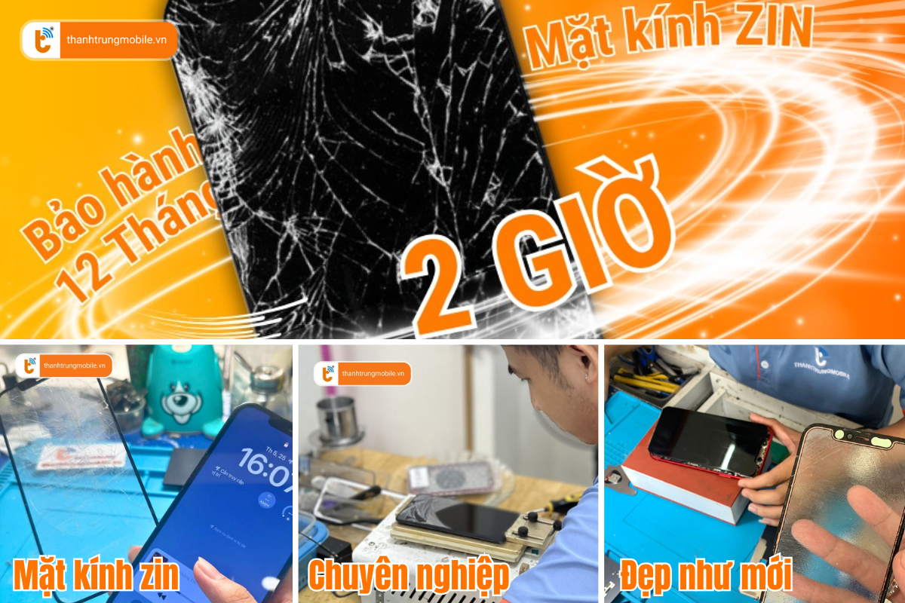
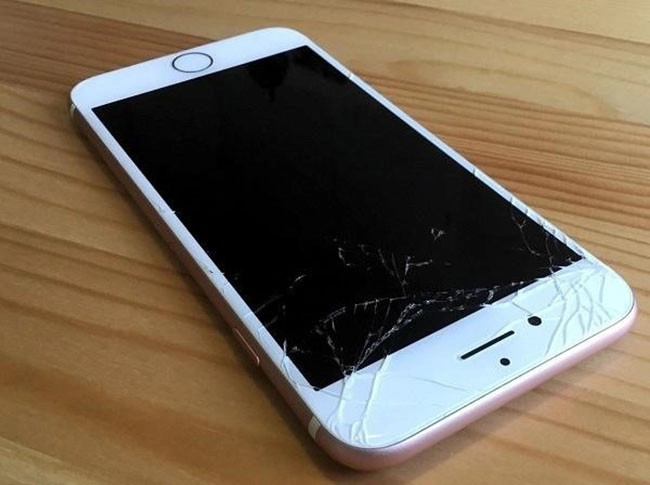

Dịch vụ Ép Kính iPhone 7 Series: Giá Rẻ, Lấy Liền Tại TP.HCM
iPhone 7 và iPhone 7 Plus dù đã ra mắt từ lâu, nhưng vẫn giữ được hiệu năng ổn định và đáp ứng tốt nhu cầu sử dụng của người dùng. Tuy nhiên, một trong những vấn đề phổ biến mà người dùng thường gặp phải là mặt kính bị nứt, vỡ hoặc trầy xước, làm giảm thẩm mỹ và ảnh hưởng đến trải nghiệm sử dụng.
Để khôi phục vẻ đẹp và sự hoàn hảo của thiết bị, dịch vụ ép kính iPhone 7 Series tại Thành Trung Mobile là giải pháp lý tưởng, giúp bạn tiết kiệm chi phí mà không cần phải thay màn hình mới.
Dấu Hiệu Cần Ép Kính iPhone 7 Series
Không phải lúc nào cũng cần thay màn hình khi mặt kính của iPhone 7 bị hỏng. Nếu bạn nhận thấy một trong những dấu hiệu dưới đây, bạn có thể cần ép kính để bảo vệ chiếc iPhone của mình:
- Mặt kính bị nứt hoặc vỡ nhưng màn hình và cảm ứng vẫn hoạt động bình thường.
- Kính bị trầy xước nghiêm trọng, làm ảnh hưởng đến vẻ ngoài và khả năng hiển thị của máy.
- Kính bị ám màu hoặc ố vàng, làm mất đi sự sang trọng và độ sáng của màn hình.
- Mặt kính bị lỗi do va chạm hoặc tác động mạnh, khiến việc sử dụng không thoải mái.
Khi Nào Cần Ép Lại Mặt Kính iPhone 7 Series?
Việc ép kính iPhone 7 và 7 Plus là lựa chọn phù hợp khi mặt kính của bạn bị hỏng mà màn hình vẫn còn hoạt động tốt. Nếu màn hình cảm ứng và hiển thị không bị lỗi, không có sọc, điểm chết hay ám ố, bạn hoàn toàn có thể ép kính mà không phải thay mới toàn bộ màn hình. Việc ép kính sẽ giúp bạn tiết kiệm chi phí và giữ được màn hình nguyên bản của máy.
Thời gian ép kính tại Thành Trung Mobile chỉ mất khoảng 1-2 giờ, và bạn sẽ nhận lại chiếc iPhone 7 như mới ngay trong ngày. Chúng tôi cam kết chất lượng ép kính đẹp như mới, bảo vệ màn hình và đem lại trải nghiệm mượt mà cho người dùng.
Ép Mặt Kính Mới Bao Nhiêu Tiền?
Giá ép kính iPhone 7 và 7 Plus tại Thành Trung Mobile rất hợp lý và phù hợp với nhiều đối tượng khách hàng. Dưới đây là bảng giá tham khảo cho dịch vụ ép kính của chúng tôi:
| Model | Giá ép kính |
|---|---|
| iPhone 7 | 250.000 VNĐ |
| iPhone 7 Plus | 300.000 VNĐ |
Để biết thêm chi tiết về giá, hãy liên hệ với chúng tôi qua hotline hoặc ghé trực tiếp cửa hàng. Bạn cũng có thể tham khảo thêm các ưu đãi và khuyến mãi hấp dẫn khi đến với chúng tôi.
Ép Kính Có Ảnh Hưởng Đến Màn Hình Không?
Ép kính là một quy trình an toàn nếu được thực hiện đúng kỹ thuật. Mặt kính và màn hình của iPhone là hai bộ phận tách biệt, nên khi ép kính đúng cách, sẽ không gây ảnh hưởng đến màn hình hay dữ liệu trong máy. Tại Thành Trung Mobile, chúng tôi sử dụng công nghệ ép kính hiện đại, giúp bạn có được chiếc iPhone 7 hoàn hảo mà không lo ảnh hưởng đến các bộ phận khác.
Ép Kính Có Lâu Không?
Quy trình ép kính iPhone 7 và 7 Plus tại Thành Trung Mobile rất nhanh chóng, chỉ mất khoảng 1-2 giờ để hoàn tất. Bạn có thể chờ đợi tại cửa hàng hoặc quay lại lấy máy sau khi chúng tôi hoàn thành công việc. Quy trình ép kính của chúng tôi minh bạch, bạn có thể trực tiếp theo dõi kỹ thuật viên làm việc và đảm bảo chất lượng sản phẩm sau khi hoàn thành.
Thành Trung Mobile – Địa Chỉ Ép Kính Uy Tín Tại TP.HCM
Thành Trung Mobile là địa chỉ uy tín chuyên cung cấp dịch vụ ép kính cho iPhone 7 và 7 Plus tại TP.HCM. Chúng tôi cam kết:
- Ép kính chất lượng, sử dụng mặt kính zin, ép kính đẹp như mới.
- Màn hình ép kính sắc nét, cảm ứng mượt mà, không bị rít tay.
- Đội ngũ kỹ thuật viên giàu kinh nghiệm, quy trình ép kính chuẩn, không ảnh hưởng đến các bộ phận khác của máy.
- Bảo hành lâu dài, tạo sự yên tâm cho khách hàng.
Chúng tôi còn nhiều chi nhánh tại TP.HCM, giúp bạn dễ dàng tiếp cận dịch vụ ép kính một cách nhanh chóng và tiện lợi. Để biết thêm thông tin chi tiết, bạn có thể tham khảo các chi nhánh của Thành Trung Mobile trên website.

Quy Trình Ép Kính Tại Thành Trung Mobile
Quy trình ép kính iPhone 7 tại Thành Trung Mobile rất đơn giản và nhanh chóng:
- Tiếp nhận máy và kiểm tra tình trạng: Chúng tôi sẽ kiểm tra mặt kính của bạn và báo giá chi tiết.
- Báo giá và thời gian lấy máy: Sau khi kiểm tra, chúng tôi sẽ báo giá và thông báo thời gian hoàn thành dịch vụ.
- Ép kính và kiểm tra lại tổng thể: Sau khi ép kính, chúng tôi sẽ kiểm tra kỹ lưỡng các chức năng của máy để đảm bảo không có lỗi.
- Bàn giao máy và hướng dẫn bảo quản: Bạn sẽ nhận lại máy ngay lập tức, cùng với phiếu bảo hành và hướng dẫn bảo quản màn hình.

Hướng Dẫn Bảo Quản Màn Hình Sau Khi Ép Kính
Để bảo vệ mặt kính mới sau khi ép, bạn cần lưu ý một số điều sau:
- Gắn miếng dán cường lực và sử dụng ốp lưng bảo vệ cho máy.
- Tránh để máy trong môi trường có nhiệt độ quá cao hoặc va đập mạnh.
- Không để máy gần các vật nhọn hoặc cứng, tránh làm vỡ kính.
- Nếu để trong túi quần, hãy xoay màn hình vào trong để tránh va chạm với các vật cứng bên ngoài.
Liên Hệ Thành Trung Mobile Để Ép Kính
Với dịch vụ ép kính iPhone 7 và 7 Plus chuyên nghiệp, nhanh chóng, giá rẻ và bảo hành dài hạn, Thành Trung Mobile là địa chỉ đáng tin cậy cho những ai muốn bảo vệ chiếc iPhone của mình. Nếu bạn cần thêm thông tin, vui lòng truy cập vào website của chúng tôi để tìm hiểu về các dịch vụ ép kính cho các dòng iPhone khác hoặc gọi ngay hotline để được tư vấn.